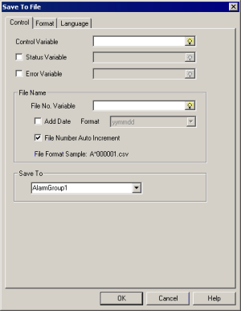
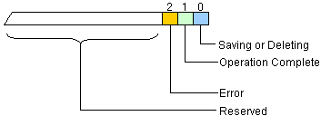

|
|
|
|
|
|
|
|
In the Save To File dialog box, click the Control tab.

Define the Control Variable, Status Variable, and the Error Variable.
Control Variable |
Specify an integer variable that controls when to output alarms to a file, and in what format. You can also use the integer variable to delete all alarm output files.
|
||||||||||||||||||
Status Variable |
Select the check box and specify an integer variable to give you the status of the file output operation.  When using both the Status Variable and Error Variable, when Bit 2 of the Status Variable turns ON, the error number is written to the Error Variable.
|
||||||||||||||||||
Error Variable |
Select the check box and define an integer variable that stores the error number in an error variable. For more information, see the note below. |

See Section 28.2.4.2, Error Codes: Alarm Errors, for a list of the error variable codes.
You can reset the values of the Control Variable, Status Variable, and Error Variable. Set up the reset conditions in the Navigator window's Project tab, Alarms & Events node. For details on how to reset these variable values, see Section 16.3.6.6, Clear Option When Saving.
Specify the File Name settings.
Property |
Description |
File No. Variable |
Specify an integer variable as the number used for the .csv file name. The range of this integer is 0-65536.
|
Add Date |
When Add Date is enabled, the date when the file is saved becomes part of the file name. Use the Format drop-down list box to select a date format to be used in the file name.
|
Format |
Select a date format: yymmdd, mmddyy, ddmmyy, or mmdd. Numerical digit values are specified by the File No. variable (when File Number Auto Increment is cleared.) |
File Number Auto Increment |
Automatically increments the file number by one each time a file is saved.
|
File Format Sample |
Provides a sample of the file format with the defined settings. |

The file name starts with the letter A.
The second letter in the file name denotes the alarm type, and can be any of the following:
A for active alarm
H for historical alarm
L for log alarm
* when multiple alarm databases are selected. For example, if a user is configuring Alarm History (100 records) and Alarm Log (100 records), the File Format Sample label in the dialog box will display A*151102000001.csv.
The file extension is csv.
The following are examples of generated file names.
Example 1:
File No. Variable: 1
Alarm Type: History
Add Date: Disabled
Save Date: December 31, 2015
File name generated is AH000001.csv
Example 2:
File No. Variable: 1
Alarm Type: Active
Add Date: Enabled
Format: mmdd
Save Date: February 3, 2016
File name generated is AA0203000001.csv
Example 3:
File No. Variable: 200
Alarm Type: Active
Add Date: Enabled
Format: yymmdd
Save Date: December 31, 2015
File name generated is AA151231000200.csv
Select the saved files destination folder from the Save To list. When changing a folder name in the text box, edit the entry or use the drop-down list to select the folder that you want to save the file to. The list contains the five most current folder names.
Saved Location |
Using the name defined in the Save To field, adds a folder to the Secondary Drive's public/projects/TargetName/Data/Alarm path and saves the alarm or event output to this folder.
|
The following is an example of the order of alarm group, event group, and alarm category folder names.
Order |
Alarm Group/Category: Name |
Save
To |
1 |
Alarm Group: Power Failure |
AlGr1 |
2 |
Alarm Group: Compression Error |
AlGr2 |
3 |
Alarm Category: Warnings |
AlCt1 |
4 |
Alarm Group: AlarmGroup1 |
AlGr3 |
5 |
Alarm Category: AlarmCategory1 |
AlCt2 |
6 |
Alarm Group: AlarmGroup2 |
AlGr4 |
7 |
Event Group: EventGroup1 |
EvGr1 |